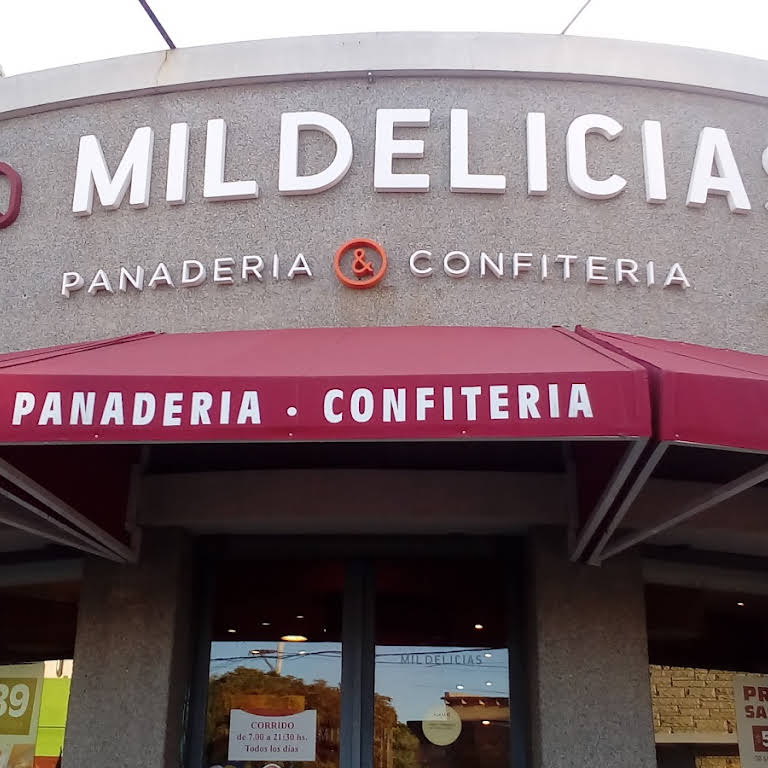
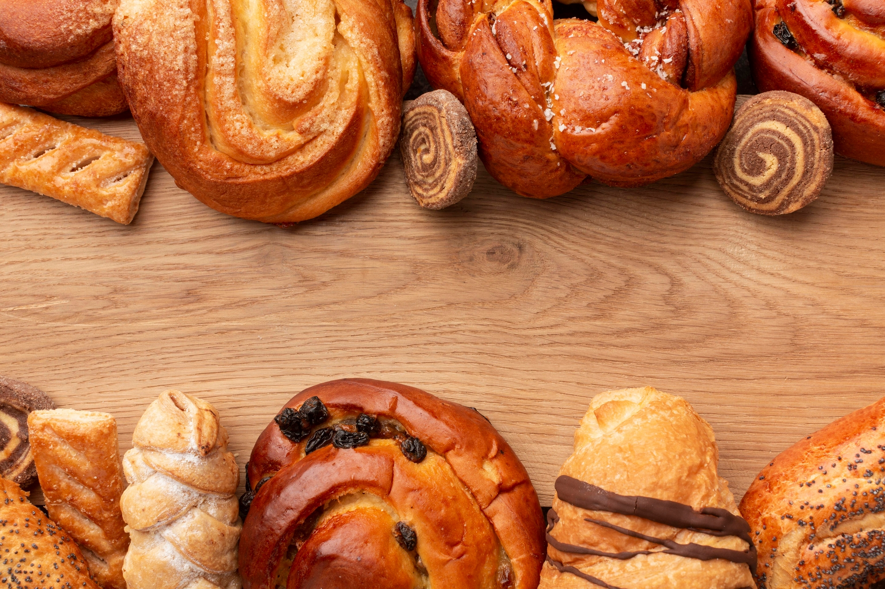
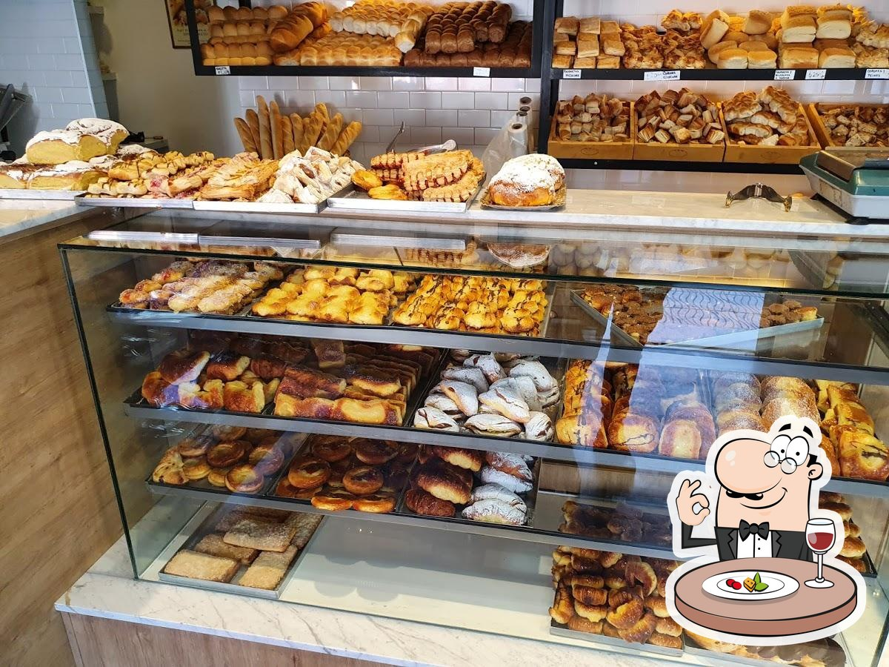

Origenes
Fundada en los 2000 en Buenos Aires, Avellaneda, Las Mil Delicias se ha convertido en un verdadero ícono local. Su éxito radica en la calidad de sus productos, el amor por el oficio y la dedicación de la familia fundadora. La historia de Las Mil Delicias comienza con los abuelos de la familia, Miguel y Laura Fernández, quienes tuvieron la visión de abrir una pequeña panadería en ese entonces, para aprovechar la experiencia que ambos tenian en el rubro; Miguel trabajo toda su vida en una panificadora, donde conocio a Laura, que venia de trabajar en la cocina de una cadena hotelera. Con mucho esfuerzo, lograron establecer su primer local en una pequeña esquina del barrio de Villa Dominico, del cual son oriundos. Si bien las circunstancias económicas no eran las más favorables, la pasión por la cocina los impulso a trabajar arduamente para sacar adelante su emprendimiento. Los primeros años no fueron fáciles para Las Mil Delicias. La competencia era dura y los vaivenes económicos afectaban constantemente la estabilidad del negocio. No obstante, Miguel y Laura, acompañados de su hija Marta, nunca perdieron la fe y se aferraron a su sueño. Fue entonces cuando decidieron ampliar su catálogo de productos y comenzar a ofrecer especialidades en tortas y cupcakes. Con el paso del tiempo, Las Mil Delicias fue ganándose el corazón de los vecinos del barrio y alrededores. La calidad y el sabor de sus tortas comenzaron a ser reconocidos en toda la zona, convirtiéndose en el lugar preferido para adquirir sus delicias reposteras.

La familia Fernández se enorgullecía de su trabajo y el legado que estaban construyendo para sus hijos. A medida que las ventas fueron incrementándose, la necesidad de ampliar la plantilla de empleados se hizo evidente. Marta, quien ya se había convertido en una experta repostera, se encargaba de la producción y también fungía como la cara visible de la confiteria. Su carisma y habilidad para relacionarse con los clientes fueron fundamentales para atraer a más personas y mantener una clientela fiel. Con el paso de los años, Las Mil Delicias se convirtió en un referente en todo el partido de Avellaneda. Sus tortas exquisitas se volvieron famosas, y muchas parejas las elegían para sus celebraciones de bodas y cumpleaños. Además, el catálogo de productos se fue expandiendo para incluir otros postres tentadores, como panes saborizados, cookies y estilos más llamativos y originales de cupcakes. Hoy en día, Las Mil Delicias se ha consolidado como una de las panaderías confiterías más reconocidas de la región. La familia Fernández sigue al mando, aunque Marta ha pasado la posta a su hija, Rocio, para continuar con el legado dulce. Ambas, junto a sus asistentes, trabajan codo a codo, manteniendo la tradición y apostando por la innovación.
A pesar del éxito alcanzado, Las Mil Delicias nunca ha dejado de lado sus raíces familiares y su esencia artesanal. Cada torta y cupcake que sale de su cocina es elaborado con ingredientes frescos y con ese toque mágico que solo una receta familiar puede tener. Los valores de dedicación, pasión y cariño se mantienen intactos, y eso es lo que hace que todo aquel que prueba sus productos se sienta como en casa. En Las Mil Delicias, cada bocado es una experiencia que se disfruta con todos los sentidos. Es ese sabor dulce que te transporta a la infancia, a los momentos felices compartidos con seres queridos. Es el legado de una familia que, a pesar de los vaivenes económicos y los desafíos, ha logrado construir un negocio sólido y lleno de amor. Las historias detrás de cada torta y cada cupcake son un misterio, pero una cosa es segura: Las Mil Delicias ha sabido conquistar los corazones de aquellos que se atreven a probar sus creaciones. Siempre hay algo especial esperando en sus vitrinas, y es gracias a la dedicación de la familia Fernández y al amor que ponen en cada detalle. Así, Las Mil Delicias continúa endulzando los momentos más importantes de la vida de sus clientes, dejando una huella imborrable en cada celebración. Con el paso del tiempo, su legado solo se hará más grande, y su misión de seguir creando delicias únicas se mantendrá intacta, para el deleite de todos aquellos que se atrevan a adentrarse en su universo dulce.
Catalogo
Como cualquier panaderia confiteria, elaboramos y ofrecemos panes, tanto normales como saborizados, facturas varias, churros, masitas y cremonas, pero nuestra especialidad son las piezas de reposteria que podes ver en nuestra galeria de imagenes, para poder elegir la que más te guste. Los invitamos a probar nuestras tortas y cupcakes personalizados!
Recorda que realizamos envios en todo AMBA. Consulta los costos de envío que pueden variar segun la zona, así como la personalización de las tortas de cumpleaños; practicamente todo GBA sur y el sur de CABA esta bonificado a partir de cierto monto.
Te esperamos !